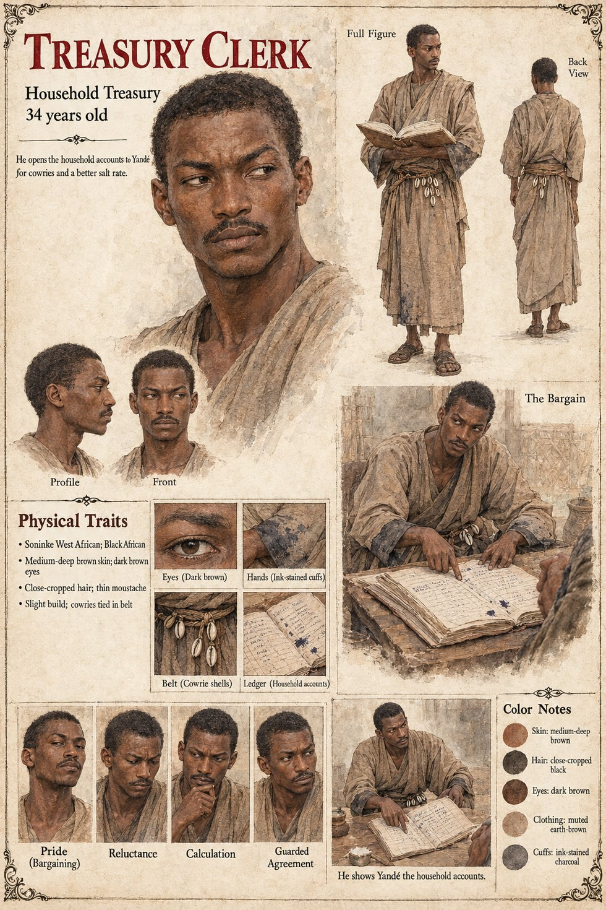

Treasury Clerk (the Household Accounts)
Treasury clerk who shows Yandé the household accounts · unnamed · 34 years old on his sheet
One sentence in Chapter Eight. In the dry season of the forty-second year after Damba's death, the trader Yandé, who is Observer 1,451, has been in Kambaso some weeks and has bought nothing. A treasury clerk, in exchange for a fistful of her cowries and the promise of a better rate on salt, lets her look at the household accounts for the previous year, on the understanding that she is auditing the palace's kitchen supplies, which she is not. She finds the line on the third strip, For the dog of the boy Damba — millet, four measures by the moon; dried fish, six; to continue., copied forward without a change of a single word from a ledger forty-two years old. She reads it three times. The line was not an error. It was not, strictly speaking, anything: a habit, written down.
The manuscript gives the clerk a bargain and nothing else: no name, age, words or later appearance, and no account of whether he knows what she is looking for. It does not say whether he is the clerk who wrote the line in the first place, forty-two years earlier, who was to live a very old man; the sheets draw two men, and the first has his own page.
The manuscript gives the bargain, the cowries and the salt. The sheet's age of 34, slight build, medium-deep brown skin, dark brown eyes, close-cropped hair, thin moustache, cowries tied at the belt, ink-stained cuffs and muted earth-brown dress are its own, as are its panels Pride (Bargaining), Reluctance, Calculation and Guarded Agreement and its scenes The Bargain and He shows Yandé the household accounts.
“let her look at the household accounts for the previous year”